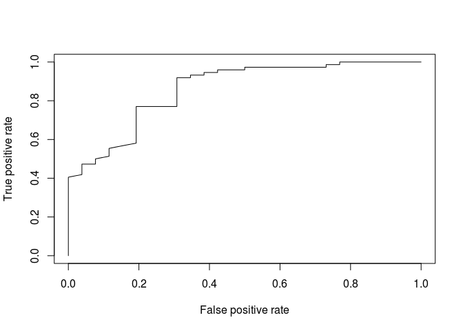
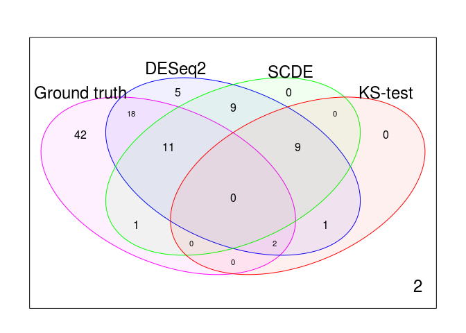
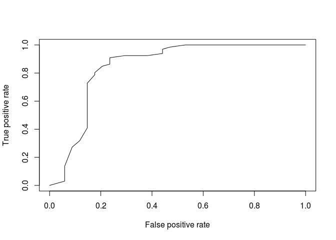
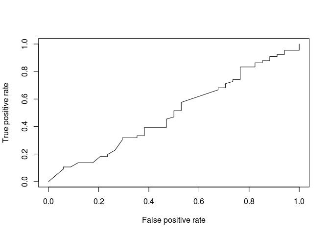

19 DE expression in a synthetic dataset
library(scRNA.seq.funcs)
library(DESeq2)
library(scde)
library(ROCR)
library(limma)
set.seed(1)19.1 Generation of a synthetic dataset
We start by generating samples using the Poisson-Beta distribution, using 100 genes from 50 cells. To simulate the second experimental condition we select one of the three parameters for each gene and modify it by multiplying by a normally distributed random factor.
nGenes <- 1e2
nCells <- 50
mult <- 2^(rnorm(nGenes, 0, 2))
synData <- scRNA.seq.funcs::GeneratePoiBetaSamples(
ks = 10^(rnorm(nGenes, 3, .5)),
as = 10^(rnorm(nGenes, -1, .5)),
bs = 10^(rnorm(nGenes, 0, .5)),
mult,
nGenes,
nCells
)
g <- synData$sample1
g2 <- synData$sample219.2 Differential expression in scRNA-seq
For bulk data, each gene is represented by a single value and to identify DEGs we need to identify those genes where the difference in expression between two conditions is sufficiently large. Replicates are needed for us to be able to assess the fold-change as well as its significance.
For single-cell data, the situation is more complicated; instead of comparing two means we are faced with the task of comparing two probability distributions. There are many different functions available for comparing two probability distributions (e.g. Total variation distance and Kullback-Leibler divergence), and since they emphasize different features, they have different properties.
To establish a ground-truth, we arbitrarily assign genes where one of the parameters has changed by more than a factor of 4 as being true positives. Remaining genes are considered not significantly changed.
changedGenes <- abs(log2(mult)) > 2
changedGenesInds <- which(changedGenes)
notChangedGenesInds <- which(abs(log2(mult)) <= 2)19.3 Kolmogorov-Smirnov test
The types of test that are easiest to work with are non-parametric ones. The most commonly used non-parametric test is the Kolmogorov-Smirnov test (KS-test) and we can use it to compare the distributions for each gene in the two conditions.
nGenes <- nrow(g)
pVals <- rep(1, nGenes)
for (i in 1:nGenes) {
res <- ks.test(g[i,], g2[i,])
# Bonferroni correction
pVals[i] <- res$p.value*nGenes
}Using the standard p-value cut-off .05, we can find out how many genes that were called as significantly different.
ksChangedGenes <- which(pVals < 0.05)
ksNotChangedGenes <- which(pVals >= 0.05)
cat(changedGenesInds)## 4 11 14 15 24 28 31 35 39 54 55 56 58 61 67 68 70 75 83 84 87 92 93 95 97 99cat(ksChangedGenes)## 13 28 31 35 40 55 56 61 67 84 87 97cat(intersect(changedGenesInds, ksChangedGenes))## 28 31 35 55 56 61 67 84 87 9719.4 Performance of the KS test
The genes identified by the KS-test differs substantially from the ground truth. Instead of considering the absolute number of identified genes, it is often more informative to consider False positive rate (FPR) and the True positive rate (TPR). The False positive rate is defined as FPR = FP/(FP + TP) and the True positive rate as TPR = TP/(TP + FN), where FP is the number of false positives, TN the number of true negatives, TP the number of true negatives and FN the number of false negatives.
tp <- length(intersect(changedGenesInds, ksChangedGenes))
fn <- length(intersect(changedGenesInds, which(pVals >= .05)))
fp <- length(intersect(notChangedGenesInds, ksChangedGenes))
tn <- length(intersect(notChangedGenesInds, which(pVals >= .05)))
tpr <- tp/(tp + fn)
fpr <- fp/(fp + tn)
cat(c(tpr, fpr))## 0.3846154 0.02702703As you can see, the p-value cut-off .05 results in a low TPR and a high FPR. That is, the test has failed to identify many of the genes that were truly changed and many of the changed genes were not detected.
Clearly, there is a trade-off between TPR and FPR. If one is willing to accept a higher FPR, then one will be able to achieve a higher TPR. The relationship between FPR and TPR is typically shown as a receiver-operator-characteristic (ROC) curve. To generate and plot the ROC curve, we need to change the p-value cut-off.
To facilitate the plotting, we use the package “ROCR”
pred <- ROCR::prediction(pVals, as.numeric(abs(log2(mult)) <= 2))
perf <- ROCR::performance(pred, "tpr", "fpr")
ROCR::plot(perf) Figure 19.1: Different distributions of read counts for a single genes across 50 cells based on the Poisson-Beta model corresponding to different paramete sets
Often we are interested in comparing several ROC curves. To carry out such a comparison, we need to summarize the entire curve using only one scalar value. This can be achieved by calculating the area under the ROC curve (AUROC). Since an ROC curve has to stay above the diagonal (why?) the AUROC will be between .5 and 1.
aucObj <- ROCR::performance(pred, "auc")
aucObj@y.values[[1]]## [1] 0.7837838Exercise: Compare the AUC values when you change some of the parameters in the analysis, e.g. number of cells, number of genes, threshold for considering a gene differentially expressed, distribution of parameter values, distribution of fold-changes. What factors make it easy or hard to identify differentially expressed genes?
19.5 Finding DE genes using DESeq2
One could still apply bulk DE methods to scRNA-seq data. One of the most popular methods for differential expression analysis for bulk RNA-Seq data is DESeq2. Let’s try it out on our synthetic dataset:
cnts <- cbind(g, g2)
cond <- factor(
c(
rep("A", ncol(g)),
rep("B", ncol(g2))
)
)
# object construction, add a pseudo-count of 1 to make DESeq work
dds <- DESeq2::DESeqDataSetFromMatrix(
cnts + 1,
DataFrame(cond),
~ cond)
dds <- DESeq2::DESeq(dds)
resDESeq <- results(dds)Check the performance of DESeq2:
pValsDESeq <- resDESeq$padj
predDESeq <- prediction(pValsDESeq, as.numeric(abs(log2(mult)) <= 2))
perfDESeq <- performance(predDESeq, "tpr", "fpr")
ROCR::plot(perfDESeq) Figure 19.2: Different distributions of read counts for a single genes across 50 cells based on the Poisson-Beta model corresponding to different paramete sets
aucObjDESeq <- performance(predDESeq, "auc")
aucObjDESeq@y.values[[1]]## [1] 0.8503119Exercise: Based on the AUC-value, does DESeq or the KS-test seem more accurate? Can you find a parameter regime where the ranking is changed?
19.6 Finding DE genes using SCDE
There are yet much fewer methods available for scRNA-seq data than for bulk data, but one popular method is SCDE. We can use it on the synthetic data:
cnts <- cbind(g, g2)
cnts <- apply(
cnts,
2,
function(x) {
storage.mode(x) <- 'integer'
return(x)
}
)
cond <- factor(
c(
rep("A", ncol(g)),
rep("B", ncol(g2))
)
)
names(cond) <- 1:length(cnts[1, ])
colnames(cnts) <- 1:length(cnts[1, ])
o.ifm <- scde::scde.error.models(
counts = cnts,
groups = cond,
n.cores = 1,
threshold.segmentation = TRUE,
save.crossfit.plots = FALSE,
save.model.plots = FALSE,
verbose = 0,
min.size.entries = 20
)
priors <- scde::scde.expression.prior(
models = o.ifm,
counts = cnts,
length.out = 400,
show.plot = FALSE)
resSCDE1 <- scde::scde.expression.difference(
o.ifm,
cnts,
priors,
groups = cond,
n.randomizations = 100,
n.cores = 1,
verbose = 0)
pValsSCDE1 <- pnorm(resSCDE1$cZ, lower.tail = FALSE)
# Need to run the other way as well
cnts2 <- cbind(g2, g)
cnts2 <- apply(
cnts2,
2,
function(x) {
storage.mode(x) <- 'integer'
return(x)
}
)
names(cond) <- 1:length(cnts2[1, ])
colnames(cnts2) <- 1:length(cnts2[1, ])
o.ifm <- scde::scde.error.models(
counts = cnts2,
groups = cond,
n.cores = 1,
threshold.segmentation = TRUE,
save.crossfit.plots = FALSE,
save.model.plots = FALSE,
verbose = 0,
min.size.entries = 20
)
priors <- scde::scde.expression.prior(
models = o.ifm,
counts = cnts2,
length.out = 400,
show.plot = FALSE
)
resSCDE2 <- scde::scde.expression.difference(
o.ifm,
cnts2,
priors,
groups = cond,
n.randomizations = 100,
n.cores = 1,
verbose = 0
)
pValsSCDE2 <- pnorm(resSCDE2$cZ, lower.tail = FALSE) As you can see, SCDE is different from the KS-test and DESeq2 since it only searches for changes in one direction. Thus, if we want to find both upregulated and downregulated genes, we must run the software twice and then combine the results as we have done above.
Exercise: Merge the results from the two runs and produce a single list of p-values and (absolute) fold-changes for all genes. Based on these results, calculate an AUROC value and compare to the other methods.
Hint: Keep in mind that we are now doing two tests for each gene.
Our answer: 
## [1] 0.860706919.7 Comparison of the methods
From the above analyses it is clear that none of the three methods (KS, DESeq2 and SCDE) is able to reliably find the majority of the DE genes. A popular strategy in this situation is to combine two or more methods, in the hope that genes that were identified by more than method are more likely to be true positives.
par(mfrow = c(1, 1))
limma::vennDiagram(
vennCounts(
cbind(
1 - changedGenes,
pValsDESeq < .05,
pValsSCDE < .05,
pVals < .05
)
),
names = c("Ground truth", "DESeq2", "SCDE", "KS-test"),
circle.col = c("magenta", "blue", "green", "red"))
allChangedInds <- intersect(
which(pValsDESeq < .05),
intersect(which(pValsSCDE < .05),
which(pVals < .05)
)
)
tpAll <- length(intersect(changedGenesInds, allChangedInds))
fnAll <- length(intersect(changedGenesInds, setdiff(1:1e3, allChangedInds)))
fpAll <- length(intersect(notChangedGenesInds, allChangedInds))
tnAll <- length(intersect(notChangedGenesInds, setdiff(1:1e3, allChangedInds)))
tprAll <- tpAll / (tpAll + fnAll)
fprAll <- fpAll / (fpAll + tnAll)
cat(c(tprAll, fprAll))## 0.3846154 0.01351351The more stringent approach results in a lower FPR at the cost of a lower TPR.
Exercise: Calculate the TPR and FPR for the case when we require two out of three methods to agree.
19.8 Beyond changes in the mean
In the realm of single-cell analyses, differential expression is no longer restricted to changes in the mean. As we saw in the previous chapter, it is possible to change the shape of the distribution without changing its mean.
Exercise: Repeat the analysis above, but this time only change the variance, but not the mean. To generate the synthetic data, use the following command:
nGenes <- 1e2
nCells <- 50
mult <- 2^(rnorm(nGenes, 0, 2))
synData <- scRNA.seq.funcs::GeneratePoiBetaSamples(
ks = 10^(rnorm(nGenes, 3, .5)),
as = 10^(rnorm(nGenes, -1, .5)),
bs = 10^(rnorm(nGenes, 0, .5)),
mult,
nGenes,
nCells,
meanFixed = TRUE
)
g <- synData$sample1
g2 <- synData$sample2Our answer: 
## [1] 0.8123021
## [1] 0.475142
## [1] 0.4312528Which method performs the best? Why do some methods perform differently for this scenario? What are the properties of the genes that are identified as DE?
19.9 Further comparisons
To get more confidence in saying which method is better, the methods can be compared multiple times.